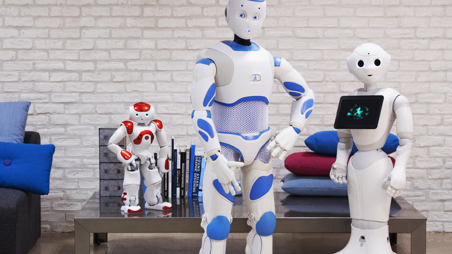

Types Of Robots

Mechanical bots come in all shapes and sizes to efficiently carry out the task for which they are designed.
All robots vary in design, functionality and degree of autonomy. From the 0.2 millimeter-long “RoboBee” to
the 200 meter-long robotic shipping vessel “Vindskip,” robots are emerging to carry out tasks that humans
simply can’t.
Generally, there are five types of robots:
1)Pre-Programmed Robots
Pre-programmed robots operate in a controlled environment where they do simple, monotonous tasks. An
example of a pre-programmed robot would be a mechanical arm on an automotive assembly line. The arm
serves one function — to weld a door on, to insert a certain part into the engine, etc. — and its job is to
perform that task longer, faster and more efficiently than a human.
2) Humanoid Robots
Humanoid robots are robots that look like and/or mimic human behavior. These robots usually perform human-
like activities (like running, jumping and carrying objects), and are sometimes designed to look like us, even having
human faces and expressions. Two of the most prominent examples of humanoid robots are Hanson Robotics’
Sophia (in the video above) and Boston Dynamics’ Atlas.
3) Autonomous Robots
Autonomous robots operate independently of human operators. These robots are usually designed to carry out
tasks in open environments that do not require human supervision. They are quite unique because they use sensors
to perceive the world around them, and then employ decision-making structures (usually a computer) to take the
optimal next step based on their data and mission. An example of an autonomous robot would be the Roomba
vacuum cleaner, which uses sensors to roam freely throughout a home.
4) Teleoperated Robots
Teleoperated robots are semi-autonomous bots that use a wireless network to enable human control from a safe
distance. These robots usually work in extreme geographical conditions, weather, circumstances, etc. Examples of teleoperated robots are the human-controlled submarines used to fix underwater pipe leaks during the BP oil spill
or drones used to detect landmines on a battlefield.
5) Augmenting Robots
Augmenting robots either enhance current human capabilities or replace the capabilities a human may have lost. The
field of robotics for human augmentation is a field where science fiction could become reality very soon, with bots
that have the ability to redefine the definition of humanity by making humans faster and stronger. Some examples of current augmenting robots are robotic prosthetic limbs or exoskeletons used to lift hefty weights.